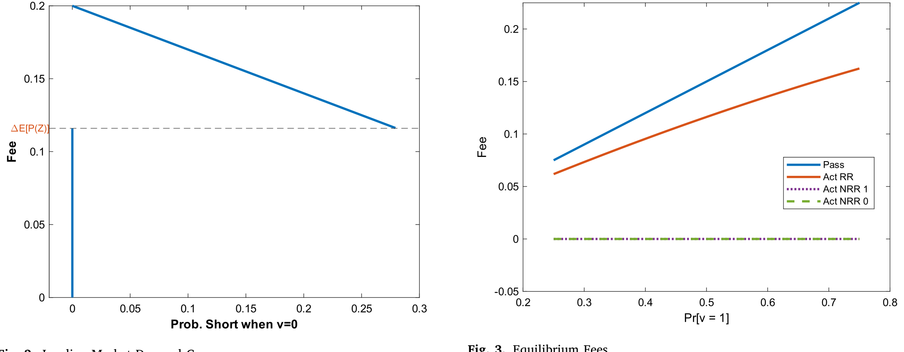
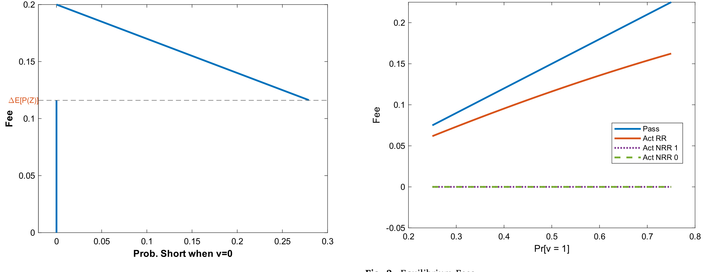
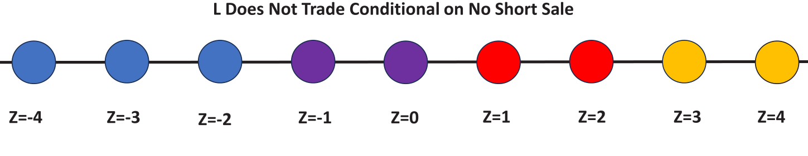
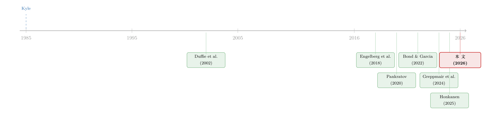

把信息卖给你的对手：证券借贷里那场无声的博弈
本文读的是 Nurisso (2026, Journal of Financial Economics)：当一个做空者来向你借股票时，她其实是在悄悄告诉你「我看空这只股」。作者用一个 Kyle (1985) 式的均衡模型把这件事讲透——出借人若想用这条信息去交易，就会吓跑送信息的人；于是「不能交易」的指数基金反而成了赢家：它们收着更高的费率，却能吸引更多做空、改善价格效率。核心结论是：承诺「装傻」的能力，本身就是一种竞争优势。
1 一桩看似无聊的生意，藏着一条信息暗线
先说一件几乎所有人都觉得无聊的事：证券借贷（securities lending）。
机构投资者手里攥着一大堆股票，闲着也是闲着，于是把它们借出去，收一笔出借费（lending fee），赚点外快。在传统叙事里，这就是一条「独立的收入流」——和你怎么交易这只股票，半毛钱关系都没有。Blocher 和 Whaley (2016) 甚至发现，对一些指数化 ETF 而言，借券收入能超过管理费本身。听上去就是个躺着收钱的后台业务。
但这里有一个被长期忽略的细节：来借你股票的人是谁？
借股票去卖空的，往往是市场上信息质量最高的一群人。Reed (2013) 在他的综述里干脆把「做空者是知情交易者」称为「这条文献里最稳健的发现之一」。这就意味着，当有人开口向你借股票去做空时，这个动作本身就是一条信息——她在用真金白银下注：这只股要跌。
于是一个朴素却尖锐的推论冒了出来：出借人在「出借」这个动作里，本该顺手学到东西。一旦有人借走你的股票，你对它的估值就该当场往下调。Honkanen (2025) 和 Greppmair et al. (2024) 的近期证据正是如此——主动型的出借人确实会顺着这条信号，把被借出去的股票悄悄减仓，而这些减仓还领先于后续的价格下跌。
这就是全文的张力所在：出借和交易，过去被当成两件互不相干的事；可一旦出借人能从借券里「学到东西」，这两件事就被死死地绑在了一起。
本文要做的，就是把这条暗线显式地建模出来：当一个机构投资者能够通过出借证券获取信息时，它的出借决策和交易决策会怎样相互纠缠？
2 模型设定：一个 Kyle 市场，外加一个借券环节
接着，一个自然的问题是——怎么把「借券即送信息」这件事，装进一个能算出闭式解的框架里？
作者的做法是在经典的 Kyle (1985) 式做市框架前面，接上一个借券阶段。模型里有四类风险中性的参与者：一个知情的投机者 (speculator, \(S\))、一个出借人 (lender, \(L\))、噪声交易者 (noise traders)，以及一个做市商 (market maker)。
只有一只股票，最终payoff \(v \in \{0,1\}\)，其中 \(Pr(v=1)=\rho \in (0,1)\)。整个博弈是静态的，分两幕：
- 借券幕：出借人先报一个出借费 \(f \ge 0\)，这是一个「要么接受、要么走人」（take-it-or-leave-it）的报价。投机者完全知道 \(v\) 的实现值，而出借人对 \(v\) 一无所知。投机者还面临一个随机的交易机会成本 \(c\)，在 \(v=0\) 时它服从 \([0,\bar C_0]\) 上的均匀分布——你可以把 \(c\) 理解成她把有限的资金投到「次优选择」上能赚到的钱。她只有在「预期做空利润减去费用 \(f\) 超过 \(c\)」时才会借券。
- 交易幕：出借人（\(L\)）、投机者（\(S\)）和噪声交易者把各自的需求提交给做市商。做市商看不到借券市场里发生了什么（既看不到费率，也看不到借券量），只能观察到总订单流，然后把价格定在条件期望上。
出借人持有 \(N \ge 2\) 股（这一假设让他借出股票后仍有余力交易），他的需求 \(D_L \in \{-1,0,1\}\)，分别是买、不动、卖。被动出借人（passive lender）是一个特例：\(D_L\) 恒等于 \(0\)——这正是后文「指数基金」的化身。投机者手里一股都没有，要做空就必须先借，她的需求 \(D_S \in \{-1,0,1\}\)，其中 \(D_S=-1\) 才是那个关键的卖空动作。
噪声需求 \(D_{NT} \in \{-2,-1,0,1,2\}\)，五种取值等概率出现——这是为信息提供掩护的烟幕弹。做市商唯一能看到的，是把三者加总后的总订单流：
做市商按下式定价，价格等于在总订单流 \(z\) 下的条件期望payoff：
$$P(z) \equiv E[v \mid z] \tag{1}$$
这就是整个故事的枢纽：做市商看不见借券市场，所以分不清「普通卖出」和「信息含量更高的卖空」。正是这个盲区，给出借人留下了一条可以用借券信息去赚钱的缝隙。
3 借券，是怎样变成一个信号的
然后，真正巧妙的一步登场了。
把借券信号记作 \(b \in \{1,0\}\)：\(b=1\) 表示投机者借了股票，\(b=0\) 表示她没借。注意模型里有一个关键约束——噪声交易者只卖不空，只有投机者会做空。于是逻辑链条变得异常干净：
投机者只在 \(v=0\)（股票被高估）时才想做空、才需要借券；而在 \(v=1\) 时她想买，根本不必借。所以——
- 看到 \(b=1\)（有人借券），出借人几乎可以断定 \(v=0\)。借券需求是一个负面信号。
- 看到 \(b=0\)（没人借券），那就是一个正面信号——既然负面信号没出现，股票多半是好的。
到这里，借券市场就被「炼」成了一条信息渠道。出借人学到 \(b\) 之后更新估值，再决定自己怎么交易。
第一个核心结果也随之浮现：费率越低，这个信号越精确。 道理很直接——费率低，更多机会成本 \(c\) 较高的投机者也愿意在 \(v=0\) 时做空，于是「该出现的负面信号」更容易真的出现。反过来，费率一高，\(b=0\) 就变得暧昧不清：没人借券，到底是因为股票真好，还是仅仅因为做空太贵、不划算？正如作者所说，从 \(b=0\) 做出的推断「其强度随费率递减」。
这就把出借人逼到了一个微妙的权衡里。他报费率时，像一个在向下倾斜的需求曲线上挑选利润最大化点的垄断者：费率高，每笔赚得多但借出的量少；费率低，量大但单笔薄。可现在还多了一层——费率还决定了他能学到多少信息。于是出现了一个反直觉的结论：出借人的最优费率，随他在「无借券」情形下计划交易的量而递减。 如果他打算在 \(b=0\) 之后买入，他就偏好低费率，好让 \(b=0\) 是个干净的利好、让自己这一买买得明白；如果他铁了心总是要卖，那他偏好高费率，好减少来自做空者的交易竞争。

Figure 2: Lending Market Demand Curve
价格在均衡里长这样（\(c^*\) 是均衡做空门槛，\(G(x) \equiv x/\bar C\) 是 \(v=0\) 时机会成本 \(c\) 的累积分布函数）：
$$ P(z)= \begin{cases} 1 & z=3\\[4pt] \dfrac{\rho}{\rho+(1-\rho)\bigl(1-G(c^*)\bigr)} & z=2\\[8pt] \rho & z\in\{1,0,-1\}\\[4pt] 0 & z\in\{-2,-3\} \end{cases} \tag{2} $$
直觉上，\(z=3\) 这种高订单流只可能在 \(v=1\) 时出现，所以价格被钉死在 \(1\)；\(z=-2,-3\) 这种深度负订单流则泄露了卖空的存在，价格塌到 \(0\)；而中间地带 \(z\in\{1,0,-1\}\) 被噪声完全淹没，价格退回先验 \(\rho\)。\(z=2\) 是那个有信息含量的内点——做市商在这里向上修正，但修正幅度取决于有多少投机者真的去做了空（即 \(G(c^*)\)）。
4 关键的反转：想交易，就先得「承诺不交易」
到这里，故事还只讲了一半。真正关键的一步，是出借人手里那个危险的工具——召回（recall）。
美国《1940 年投资公司法》（Investment Company Act of 1940）要求共同基金必须能够随时召回借出去的股票；一旦召回，借券人就得买回股票来归还。这本是一条保护性条款，可它在这个模型里却长出了意想不到的牙齿。
设想：出借人通过 \(b=1\) 学到了「\(v=0\)，股票被高估」。这时他心里痒痒——何不把股票召回来，趁价格还没跌、先卖个好价钱？ Chuprinin 和 Ruf (2018) 的经验证据正记录了这种行为。可问题在于，一旦召回，投机者就没法做空了，她的交易利润归零，扣掉机会成本 \(c\) 后净亏。于是——
如果投机者预期出借人会召回，她干脆一开始就不借。送信息的人跑了，出借人也就什么都学不到了。
于是反转出现：出借人若真想从借券市场学东西，他必须先承诺「我不召回」。 怎么承诺？答案出人意料地朴素——把费率提上去。 因为召回时出借人要把费 \(f\) 退还给投机者，这笔被放弃的借券收入，就是召回的代价。费率定得足够高，召回的诱惑就被这笔代价压住了。
第二个核心结果由此诞生：这个「不召回条件」（no-recall condition）给出借人能收取的费率设了一个严格为正的下界。据作者所知，这个下界是做空文献里的一个新发现，它揭示了「要求共同基金能随时召回」这条监管规定的一个隐性成本——它会抬高费率、抑制做空。一个本意是保护出借人的条款，最后却让做空者更难借到券。

Figure 3: Equilibrium Fees
5 「装傻」的胜利：为什么指数基金反而赢了
前面两个结果都在说一件事：出借人能交易这件事本身，给做空者强加了沉重的成本——要么被出借人顺着 \(b\) 信号抢跑（front-run），要么被召回。那么，一个不能交易的出借人会怎样？
作者把「不能交易」的出借人称为被动出借人，并把它解读成指数基金——它的 \(D_L\) 恒为 \(0\)。这一身份带来两个直接后果：它没法用借券信息去交易，也没动机为了交易而召回。换句话说，指数基金天生就「承诺」了不会占做空者的便宜。
这就引出了全文最漂亮的第三个核心结果，也是一个反直觉的反转：
作为纯粹的收入最大化者，被动出借人在均衡里会选择比主动出借人更高的费率。可即便费率更高，它们仍能吸引更多的做空需求——因为它们能可信地承诺不交易、不召回。在某些情形下，这种「放松做空约束」的能力甚至能改善价格效率。
「装傻」的能力，成了一种竞争优势。主动出借人空有压低费率去补偿做空者的本事，却因为「需要承诺不召回」而做不到（费率被那个正下界顶着）；被动出借人不需要承诺，因为它根本没有食言的能力。

Figure 1: Equilibrium Prices
这个结果一口气调和了被动投资文献里的三组经验事实：(i) 主动出借人会顺着借券信息交易（Honkanen, 2025；Greppmair et al., 2024）；(ii) 一只股票的被动持股越多，出借费率越高（Honkanen, 2025；Palia & Sokolinski, 2024；Sikorskaya, 2025）；(iii) 被动持股越多，对这只股票的做空需求反而越大（von Beschwitz et al., 2025；Palia & Sokolinski, 2024；Sikorskaya, 2025）。三者放在一起，说的其实是同一句话：主动出借人带来的信息泄露成本，比被动出借人那点更高的费率，更让做空者吃不消。
更进一步，本文还对「指数化损害价格效率」这个流行担忧提出了修正：既有的指数化理论大多干脆绕开了借券市场，假定做空无摩擦；而一旦把借券市场放回来，就会发现这种抽象高估了指数投资的危害。即便被动出借人没能把价格效率提上去，它们在借券市场里的存在，也至少缓解了「自己不知情交易」本会造成的那部分损害。
（关于卖空、ETF 与流动性供给的另一面，也可参见《高得反常的 ETF 卖空：到底是违规，还是流动性的另一副面孔？》。）
6 文献脉络
这条研究的源头，要回到 Kyle (1985)——是他把「知情交易者藏在噪声里、做市商只能从订单流里反推信息」的这套语言交给了整个市场微观结构。本文几乎是把借券环节直接焊在了这套 Kyle 框架的前面。
往后，证券借贷的均衡分析有 Duffie, Gârleanu, Pedersen (2002) 这样的奠基之作，把借贷、做空与定价放进了一个搜寻框架；Engelberg, Reed, Ringgenberg (2018) 则把「召回风险」明确为做空者独有的一种风险。但这些工作里，借券基本还是个「定价与供给」的故事，信息泄露并未被显式地搬上台面。
真正把「借券即泄密」摆到中心的，是 Pankratov (2020)——他数值化地分析了一个内生做空约束的模型，出借人在借券收入与信息之间权衡定费。本文的方法论贡献，正是相对于此：它把同一类问题做成了有闭式解的可解框架，从而能透明地刻画背后的经济力量，还顺手给出了「策略性召回」的首个理论分析。与此并行的还有 Chen et al. (2025) 关于借券市场市场势力的研究，以及 Bond & Garcia (2022)、Coles et al. (2022) 这条关于指数化与价格效率的争论——本文恰恰是从「借券市场」这个被前人省略的渠道，给这场争论添了一个新答案。
而点燃这一切的火星，是 Honkanen (2025) 与 Greppmair et al. (2024) 的经验发现：出借人真的会顺着借券信号交易。理论与证据，就这样在 2024–2026 年间扣到了一起。

7 评论与延伸（Q&A + 研究方向）
(a) 几个可能的疑问
Q：「\(b=1\) 完美揭示 \(v=0\)」是不是太强了？现实里噪声交易者难道不会做空吗？
确实强。作者在脚注里坦承，假设噪声需求只卖不空，等于是把模型推到了「卖空需求对 \(v=0\) 完全知情」的极端，而非「高度」知情。但他也辩护说，出借人似乎确有能力识别哪些是知情的卖空（援引 Honkanen, 2025），这削弱了该假设的尖锐程度。本质上这是为了换取闭式解而付的简化代价。
Q：这和「市场势力压高费率」（Chen et al., 2025）是同一回事吗？
不是，而且这正是本文的差异点。Chen et al. (2025) 的高费率来自垄断势力，且出借人不交易，所以没有信息泄露。本文恰恰放松了「出借人不交易」这一假设，并让信息质量内生于费率选择。在这里，主动出借人的高费率下界来自「承诺不召回」的需要，而非单纯的定价权——这是一个全新的、制度驱动的机制。
Q：被动出借人收费更高，却更受做空者欢迎，这不矛盾吗？
不矛盾，关键是「比较什么」。做空者真正在意的是总成本：显性费率 + 隐性的信息泄露/召回成本。被动出借人显性费率更高，但隐性成本为零（它不会抢跑、也不会召回）。模型说的是，后者的节省压倒了前者的多付。
Q：放松做空约束就一定改善价格效率吗？万一只是让坏消息更快、好消息更慢呢？
这正是作者比同行更谨慎的地方。他明确指出：被动出借人帮助坏消息进入价格，却可能妨碍好消息进入（因为 \(b=0\) 的正面信号被高费率搞模糊了）。所以本文给的不是「一定改善」，而是「在一组明确条件下能改善整体价格效率」——这比文献里很多笼统的断言要克制。
Q：监管含义是什么？《1940 年法案》的召回条款真该改吗？
模型给出的是一个清醒的权衡，而非一刀切的建议。强制可召回，保护了出借人、却抬高了费率下界、压抑了做空与价格发现。文章没有主张废除它，而是把这条「隐性成本」摆到桌面上，让政策讨论第一次能看见它。
Q：这对「指数化吞噬市场」的担忧意味着什么？
意味着至少在借券这条渠道上，担忧被夸大了。既有指数化理论常假定做空无摩擦，从而高估了被动投资对价格效率的伤害。把借券市场放回来，被动资金「天生装傻」的承诺价值反而是一股正向力量。
(b) 几个可能的研究问题与提案
1. 把这套机制搬到公司债 / 信用市场。 【经济故事】公司债借券同样支撑着信用做空与 CDS-现券基差套利，而债券持有人高度集中（保险公司、债基），「出借人也是大持有人」的张力比股票更尖锐。借券信号在信用市场里可能更值钱，因为坏消息常以违约/降级的跳跃形式到来。 【可行性】中。需要 Markit Securities Finance 的借券费率与利用率数据，配合 TRACE 的成交。识别可借鉴评级临界点或指数纳入/剔除带来的被动持股外生变化。难点是公司债做空本就稀薄、噪声大。
2. 用指数重构做「召回承诺」的准实验。 【经济故事】本文的核心因果论断是「能交易 → 需要承诺不召回 → 费率有正下界」。Russell 1000/2000 重构会把同一批股票在主动/被动持股结构上外生地推来推去，正好用来检验「被动持股上升是否同时带来更高费率与更多做空」。 【可行性】高。Sikorskaya (2025) 已用类似设计跑通了数据管线，借券数据可得，断点清晰。可直接检验本文「费率↑且做空↑同时成立」这一联合预测。
3. 直接度量「召回」作为信息事件。 【经济故事】模型说召回是出借人「学到 \(v=0\) 后想抢跑」的产物。若能拿到召回的精确时点，就能检验召回是否系统性地领先于价格下跌、且更可能发生在主动出借人身上。 【可行性】中。召回数据极难获得，多半要靠单一托管行或代理出借人的内部数据。一旦拿到，识别相对干净（事件研究 + 主动/被动出借人交叉验证）。
4. 外资持有人作为「天然被动方」。 【经济故事】跨境持有人常因信息劣势或合规限制而不在本地市场主动交易，这使他们在行为上接近本文的「被动出借人」。那么外资持股更高的股票，是否也表现出「更高费率 + 更多做空 + 负面信息更快进入价格」？ 【可行性】中。需要按持有人类型拆分的国别持股数据（如 FactSet/13F 之外的跨境托管数据），识别可用外资准入改革（如 A 股纳入 MSCI）做冲击。机制贴合、但「外资=被动」这一映射需要小心论证。
8 我的判断
这是一篇「小模型、大洞见」的范本。它的贡献不在于发现了新现象——「出借人会顺着借券信号交易」是 Honkanen (2025)、Greppmair et al. (2024) 已经摆在那里的经验事实；它的贡献在于用一个干净到能写出闭式解的框架，把这堆零散事实拧成了一条逻辑链，并从中挤出了两个真正新的东西：召回承诺给费率设下的正下界，以及指数基金「因不能交易而更受做空者青睐」的反转。后者尤其漂亮，因为它把「被动投资伤害价格效率」这个流行担忧，在借券这一具体渠道上做了一次有条件的翻案。
我的保留主要落在识别——但这是对模型的识别，而非数据。整个结果高度依赖两条假设：噪声交易者只卖不空（让 \(b=1\) 完美揭示 \(v=0\)），以及出借人完全不知情。一旦做空需求只是「高度」而非「完全」知情，或者出借人本身带有私有信号（作者在扩展里碰了一下），那个干净的「装傻优势」会被磨损多少，值得更系统地刻画。模型也刻意把出借人的初始组合当作既定、绕开了主动/被动出借人在持仓上的差异。
我最想看到的下一步，是把这套逻辑接到可观测的数据上去——尤其是用指数重构这类外生冲击，去直接检验那个联合预测：被动持股上升时，费率与做空需求是否真的同向上升。 如果数据点头，这篇理论就不只是优雅，而是站得住。
参考文献
- Bagwell, K., Ramey, G. (1991). Oligopoly limit pricing. Rand Journal of Economics 22(2), 155–172.
- Blocher, J., Whaley, R. (2016). Two-sided markets in asset management: Exchange-traded funds and securities lending. Working Paper.
- Bond, P., Garcia, D. (2022). The equilibrium consequences of indexing. Review of Financial Studies 35(7), 3175–3230.
- Chen, S., Kaniel, R., Opp, C. (2025). Market power in the securities lending market. SSRN Working Paper.
- Chuprinin, O., Ruf, T. (2018). Let the bear beware: What drives stock recalls. SSRN Working Paper.
- Coles, J.L., Heath, D., Ringgenberg, M.C. (2022). On index investing. Journal of Financial Economics 145(3), 665–683.
- Duffie, D., Gârleanu, N., Pedersen, L.H. (2002). Securities lending, shorting, and pricing. Journal of Financial Economics 66(2), 307–339.
- Engelberg, J.E., Reed, A.V., Ringgenberg, M.C. (2018). Short-selling risk. Journal of Finance 73(2), 755–786.
- Greppmair, S., Jank, S., Saffi, P., Sturgess, J. (2024). Securities lending and information acquisition. SSRN Working Paper.
- Honkanen, P. (2025). Securities lending and trading by active and passive funds. Journal of Financial and Quantitative Analysis 60(3), 1272–1309.
- Kyle, A.S. (1985). Continuous auctions and insider trading. Econometrica 53(6), 1315–1335.
- Palia, D., Sokolinski, S. (2024). Strategic borrowing from passive investors. Review of Finance 28(5), 1537–1573.
- Pankratov, A. (2020). Securities lending and information transmission: A model of endogenous short-sale constraints. SSRN Working Paper.
- Reed, A.V. (2013). Short selling. Annual Review of Financial Economics 5, 245–258.
- Sikorskaya, T. (2025). Institutional investor mandates, securities lending, and short-selling constraints. SSRN Working Paper.
- von Beschwitz, B., Honkanen, P., Schmidt, D. (2025). Passive ownership and short selling. Review of Finance 29(4), 1137–1188.